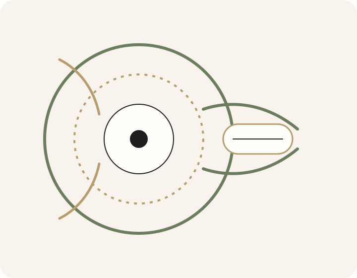
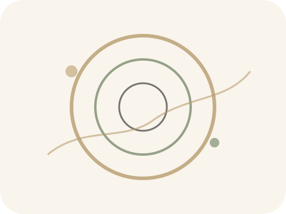
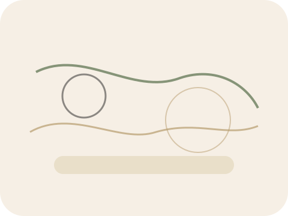
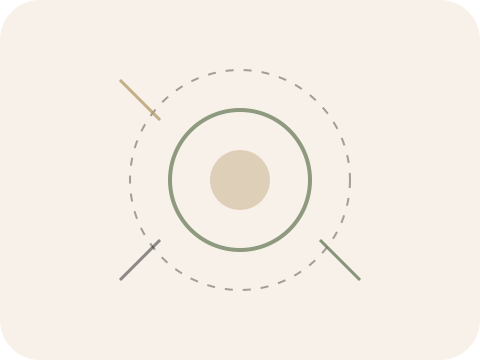
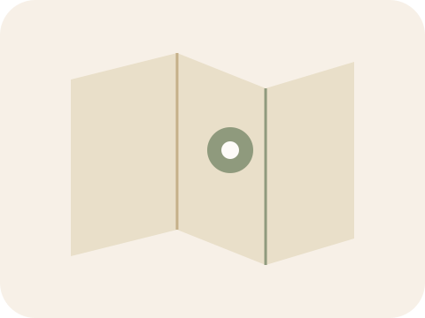

Aussehen. Durchsehen.
Ihr Gesicht. Meine Inspiration. Markant. Sportlich. Elegant. Ihre neue Brille ist sichtbares Stilelement und wichtigstes Accessoire.
Augenoptik im Wandel der Zeit: ZEIT nehmen, ZEIT haben – für Ihre Augen und Ihre Wünsche. Ich will, dass Sie Sehen erleben.
Markant, sportlich, elegant – Sie wählen, ich berate.
Individuell angepasst, präzise gemessen.
3D‑Refraktion für mehr Sehschärfe und Kontrast.

Brillen, Kontaktlinsen und präzise Sehanalyse – individuell abgestimmt und mit ruhiger Beratung. Sie wählen. Ich berate.

Ihr Gesicht. Meine Inspiration. Markant. Sportlich. Elegant. Ihre neue Brille ist sichtbares Stilelement und wichtigstes Accessoire.
Individuelle Kontaktlinsen – weich, formstabil oder multifokal. Präzise Messung, Hornhaut-Topographie und regelmäßige Kontrollen für bestmöglichen Sehkomfort.
Brillenglasbestimmung in einer neuen Dimension: 3D‑Refraktion mit Visionix 120 für mehr Sehschärfe, mehr Kontrast und komfortables Sehen.
Verlässlichkeit, Sicherheit und Zeit für Ihre Wünsche.

Mit Kompetenz und Freude für Sie da. Danke für Vertrauen, Empfehlung und Treue.
Bewertungen ansehenZEIT nehmen, ZEIT haben – für Ihre Augen und Ihre Wünsche.
3D‑Refraktion, Präzision und Komfort in der Brillenglasbestimmung.
Kontrollen, Anpassungen und persönlicher Service, wenn es darauf ankommt.
Ich will, dass Sie Sehen erleben. Joachim Skorupa.
Qualität. Funktion. Sicherheit. Verlässlichkeit. Design. Mode. Vielfalt. Technologie.
Fühlen Sie sich wohl. Seien Sie unser Gast – wir nehmen uns Zeit. Selters. Saft. Kaffee. Espresso.
Auswahl nach Hause. In Ruhe entscheiden.

Bitte drucken Sie das gewünschte Angebot aus und bringen Sie es in unser Fachgeschäft mit. Kein Ausdruck möglich? Sagen Sie es bei Ihrem Besuch – Sie profitieren selbstverständlich trotzdem.
Flexibel bleiben und trotzdem Premiumqualität erleben: Finanzieren Sie Ihre neue Brille oder sichern Sie sich Vorteile für Kontaktlinsen.
Zentral in Dresden, leicht erreichbar, mit viel Zeit für Sie.

Optik Schorcht
Inhaber: Joachim Skorupa
Kleine Brüdergasse 1
01067 Dresden
Telefon: 0351 4901510
E-Mail:
optik.schorcht@euronet-server.com
Öffnungszeiten
Mo / Di / Do / Fr: 09:00 – 18:00
Mittwoch: geschlossen
Samstag: nach Vereinbarung
Zeit nehmen. Zeit haben. Für Ihre Augen. Für Ihre Wünsche.
Karte laden
Zum Schutz Ihrer Daten wird die Karte erst nach Klick geladen. Es werden dabei Inhalte von Drittanbietern abgerufen.